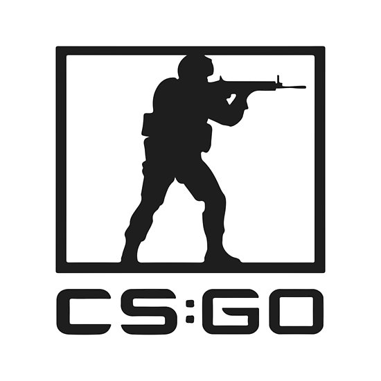

Home
Counter-Strike: Global Offensive
Counter-Strike: Global Offensive (CS: GO) is een first-person shooter die op 21 augustus 2012 door Valve werd uitgebracht. Het spel maakt deel uit van de Counter-Strike-serie en Valve poogde hiermee terug te keren naar de begintijd van Counter-Strike. Van CS:GO verschenen versies voor
Windows, macOS, Linux, PlayStation 3 en Xbox 360.
inhoud
- Competitie
- Spelmodi
- Ontvangst
- Externe link
- Bronnen
- Verwijzingen
Competitie
Counter-Strike Global Offensive zorgt voor een competitieve community. Zo werken ze binnen het spel met een rangsysteem.[1]
De speler kan een hogere rang halen door games te winnen tegen andere spelers. Het rangsysteem is puntgebaseerd, er worden
meer punten ontvangen voor "MVPs" (Most Valuable Player, meest waardevolle speler), rang van de tegenstander en het aantal
gewonnen en verloren rondes. Er wordt gebruik gemaakt van het Valve Anti-Cheat programma om valsspelers te vermijden en te
straffen. Counter-Strike: Global Offensive heeft ook de bijna uitstervende PvP-competitie van Counter-Strike: Source nieuw leven in
geblazen. Veel spelers zijn bij de release van Counter-Strike: Global Offensive overgestapt. Er zijn volop internationale toernooien waarin teams het
tegen elkaar opnemen in de zogeheten e-sports.[2]
Spelmodi
Er zijn zeven verschillende spelmodi in Counter-Strike: Global Offensive.
- Classic Casual en Competitive: De bekendste en meest gespeelde modus. In deze modi zijn zowel bom-missies als gijzelingsmissies een mogelijkheid. Het is de bedoeling om de tegenstanders uit te
schakelen, de bom te planten (als terrorist) of onschadelijk te maken (als Counter-Terrorist).
- Arms Race: In deze modus is het de bedoeling om tegenstanders uit te schakelen. Als men twee keer iemand neerschiet of een keer doodsteekt, wordt men beloond met een beter wapen. Wie als eerst met
alle wapens iemand vermoordt, is de winnaar.
- Demolition: Als men in deze modus iemand uitschakelt, wordt men beloond met een wapen uit een voorgeprogrammeerde set wapens.
- Deathmatch: In deze modus is het de bedoeling dat men de spelers van het andere team uitschakelt. Als men iemand vermoordt, krijgt men punten. Wie aan het einde van de tien minuten durende ronde de meeste punten heeft behaald, wint.[3]
- Flying Scoutsman: In deze modus speelt men met de Scout, ofwel de SSG-08, en met het mes. De levels hebben een lage zwaartekracht waardoor de spelers onder andere hoger kunnen springen.
- Wingman: Wingman is vergelijkbaar met Competitive, alleen zijn er twee teams van twee spelers en wordt er gespeeld op kleinere of verkleinde maps.
- Danger Zone: Danger Zone is een Battle Royale spelmodus. 16 tot 18 spelers spelen op een grote map en vechten om als laatste over te blijven.[4]
Ontvangst
Het spel is positief ontvangen door critici. Op Metacritic is de gemiddelde score een 8,3. Gamer.nl noemde het "een van de beste first person shooters van het moment".[5] De pc-versie had meer succes dan de console versies. De console versie wordt
dan ook al jaren niet meer onderhouden, in tegenstelling tot de pc-versie waar er nog regelmatig updates en upgrades uitkomen.
Extrerne Link
Counter-Strike: Global Offensive op Steam
Bronnen
Verwijzingen
- Steamcommunity
- EMS One Katowice 2014 - Champions (gearchiveerd)
- Counter-Strike: Global Offensive Steam.com
- Blogpagina op Counter-strike.net